토목기사 (2020-09-26 기출문제)
1과목: 응용역학
1. 그림과 같은 구조물에서 단부 A, B는 고정, C지점은 힌지 일 때 OA, OB, OC 부채의 분배율로 옳은 것은?
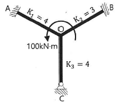
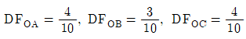
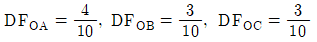
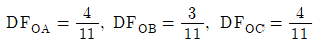
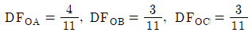
(정답률: 71%)

2. 동일평면상늬 한 점에 여러 개의 힘이 작용하고 있을 때, 여러 개의 힘의 어떤 점에 대한 모멘트의 합은 그 합력의 동일점에 대한 모멘트와 같다는 것은 무슨 정리인가?
- Mohr의 정리
- Lami의 정리
- Varignon의 정리
- Castigliano의 정리
(정답률: 79%)
3. 그림과 같은 캔틸레버 보에서 집중하중(P)이 작용할 경우 최대 처짐(δmax)은? (단, EI는 일정하다.)
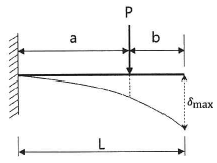
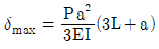
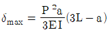
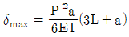
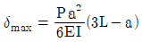
(정답률: 52%)
4. 그림과 같이 A점과 B점에 모멘트하중(Mo)이 작용할 때 생기는 전단력도의 모양은 어떤 형태인가?
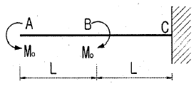
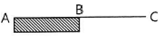
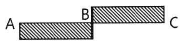
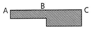
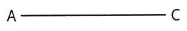
(정답률: 73%)
5. 탄성계수(E), 전단 탄성계수(G), 푸아송 수(m) 간의 관계를 옳게 표시한 것은?
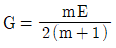
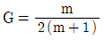
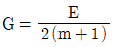
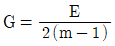
(정답률: 75%)
6. 그림과 같은 연속보에서 B점의 반력(RB)은?
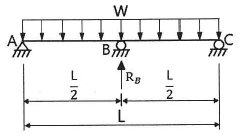
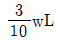
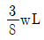
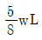
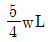
(정답률: 60%)
7. 탄성변형에너지는 외력을 받는 구조물에서 변형에 의해 구조물에 축적되는 에너지를 말한다. 탄성체이며 선형거동을 하는 길이 L인 캘틸레버 보의 끝단에 집중하중 P가 작용할 때 굽힘모멘트에 의한 탄성변형에너지는? (단, EI는 일정하다.)
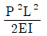
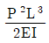
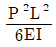
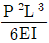
(정답률: 75%)
8. 지름 D인 원형 단면 보에 휨모멘트 M이 작용할 때 최대 휨응력은?
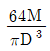
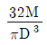
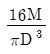
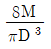
(정답률: 77%)
9. 그림과 같은 트러스의 사재 D의 부재력은?
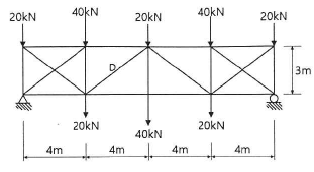
- 50kN(인장)
- 50kN(압축)
- 37.5kN(인장)
- 37.5kN(압축)
(정답률: 58%)
10. 다음 중 정(+)의 값뿐만 아니라 부(-)의 값도 갖는 것은?
- 단면계수
- 단면 2차 반지름
- 단면 상승 모멘트
- 단면 2차 모멘트
(정답률: 81%)
11. 그림과 같은 단면의 A-A축에 대한 단면 2차 모멘트는?
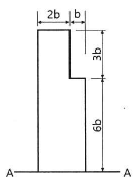
- 558b4
- 623b4
- 685b4
- 729b4
(정답률: 74%)
12. 그림과 같은 단순보에 일어나는 최대 전단력은?
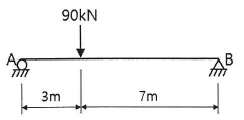
- 27kN
- 45kN
- 54kN
- 63kN
(정답률: 70%)
13. 그림과 같이 단순보 위에 삼각형 분포하중이 작용 하고 있다. 이 단순보에 작용하는 최대 휨모멘트는?
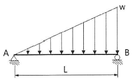
- 0.03214wL2
- 0.04816wL2
- 0.⑤217wL2
- 0.06415wL2
(정답률: 54%)
14. 그림과 같이 단순보에 이동하중이 작용하는 경우 절대최대휨모멘트는?
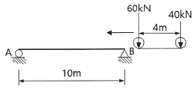
- 176.4kNㆍm
- 167.2kNㆍm
- 162.0kNㆍm
- 125.1kNㆍm
(정답률: 64%)
15. 그림과 같은 단순보에 등분포 하중(q)이 작용할 때 보의 최대 처짐은? (단, EI는 일정하다.)
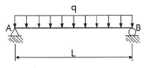
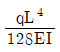
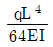
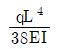
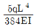
(정답률: 78%)
16. 15㎝ × 30㎝의 직사각형 단면을 가진 길이가 5m인 양단 힌지 기둥이 있다. 이 기둥의 세장비(λ)는?
- 57.7
- 74.5
- 115.5
- 149.0
(정답률: 72%)
17. 반지름이 25㎝인 원형 단면을 가지는 단주에서 핵의 면적은 약 얼마인가?
- 122.7cm2
- 168.4cm2
- 254.cm2
- 336.8cm2
(정답률: 73%)
18. 그림과 같은 3힌지 아치에서 C점의 휨모멘트는?
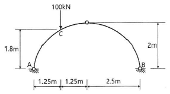
- 32.5kNㆍm
- 35.0kNㆍm
- 37.5kNㆍm
- 40.0kNㆍm
(정답률: 71%)
19. 그림과 같이 이축응력(二軸應力)을 받는 정사각형 요소의 체적변형률은? (단, 이 요소의 탄성계수 E=2.0×105MPa, 푸아송 비 v=0.3이다.)
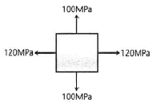
- 3.6×10-4
- 4.4×10-4
- 5.2×10-4
- 6.4×10-4
(정답률: 71%)
20. 그림에 표시된 힘들의 x방향의 합력으로 옳은 것은?
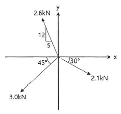
- 0.4kN(←)
- 0.7kN(→)
- 1.0kN(→)
- 1.3kN(←)
(정답률: 70%)
2과목: 측량학
21. 노선 측량의 일반적인 작업 순서로 옳은 것은?
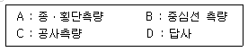
- A → B → D → C
- A → C → D → B
- D → B → A → C
- D → C → A → B
(정답률: 72%)
22. 2000m의 거리를 50m씩 끊어서 40회 관측하였다. 관측결과 총오차가 ±0.14m이었고, 40회 관측의 정밀도가 동일하다면, 50m 거리 관측의 오차는?
- ±0.022m
- ±0.019m
- ±0.016m
- ±0.013m
(정답률: 61%)
23. 지형측량의 순서로 옳은 것은?
- 측량계획 - 골조측량 - 측량원도 작성 - 세부측량
- 측량계획 - 세부측량 - 측량원도 작성 - 골조측량
- 측량계획 - 측량원도 작성 - 골조측량 - 세부측량
- 측량계획 - 골조측량 - 세부측량 - 측량원도 작성
(정답률: 66%)
24. 교호수준측량을 한 결과로 a1=0.472m, a2=2.656m, b1=2.106m, b2=3.895m를 얻었다. A점의 표고가 66.204m 일 때 B점의 표고는?
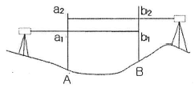
- 64.130m
- 64.768m
- 65.238m
- 67.641m
(정답률: 51%)
25. 항공사진의 특수 3점이 아닌 것은?
- 주점
- 보조점
- 연직점
- 등각점
(정답률: 61%)
26. 도로의 노선 측량에서 반지름(R) 200m인 원곡선울 설치할 때, 도로의 기점으로부터 교점(I.P)까지의 추가거리가 423.26m, 교각(I)가 42°20′일 때 시단현의 편각은? (단, 중심말뚝간격은 20m이다.)
- 0°50′00″
- 2°01′52″
- 2°03′11″
- 2°51′47″
(정답률: 44%)
27. 구면 삼각형의 성질에 대한 설명으로 틀린 것은?
- 구면 삼각형의 내각의 합은 180°보다 크다.
- 2점간 거리가 구면상에서는 대원의 호길이가 된다.
- 구면 삼각형의 한 변은 다른 두 변의 합보다는 작고 차보다는 크다.
- 구과량은 구 반지름의 제곱에 비례하고 구면 삼각형의 면적에 반비례한다.
(정답률: 64%)
28. 수평각 관측을 할 때 망원경의 정위, 반위로 관측하여 평균하여도 소거되지 않는 오차는?
- 수평축 오차
- 시준축 오차
- 연직축 오차
- 편심 오차
(정답률: 39%)
29. 그림과 같은 횡단면의 면적은?
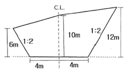
- 196m2
- 204m2
- 216m2
- 256m2
(정답률: 40%)
30. 삼변측량을 실시하여 길이가 각각 a=1200m, b=1300m, c=1500m 이었다면 ∠ACB는?
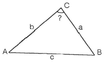
- 73°31′02″
- 73°33′02″
- 73°35′02″
- 73°37′02″
(정답률: 46%)
31. 30m에 대하여 3mm 늘어나 있는 줄자로써 정사각형의 지역을 측정한 결과 80000m2이었다면 실제의 면적은?
- 80016m2
- 80008m2
- 79984m2
- 79992m2
(정답률: 58%)
32. GNSS 데이터의 교환 등에 필요한 공통적인 형식으로 원시데이터에서 측량에 필요한 데이터를 추출하여 보기 쉽게 표현한 것은?
- Bernese
- RINEX
- Ambiguity
- Binary
(정답률: 57%)
33. 수준망의 관픅 결과가 표와 같을 때, 관측의 정확도가 가장 높은 것은?
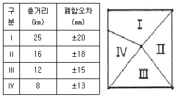
- Ⅰ
- Ⅱ
- Ⅲ
- Ⅳ
(정답률: 62%)
34. GPS 위성측량에 대한 설명으로 옳은 것은?
- GPS를 이오하여 취득한 높이는 지반고이다.
- GPS에서 사옹하고 있는 기준타원체는 GRS80 타원체이다.
- 대기 내 수중기는 GPS 위성 신호를 지연시킨다.
- GPS 측량은 별도의 후처리 없이 관측값을 직접 사용할 수 있다.
(정답률: 58%)
35. 완화곡선에 대한 설명으로 옳지 않은 것은?
- 완화곡선의 접선은 시점에서 원호에, 종점에서 직선에 접한다.
- 완화곡선에 연한 곡선반지름의 감소율은 캔트(cant)의 증가율과 같다.
- 완화곡선의 반지름은 그 시점에서 무한대, 종점에서는 원곡선의 반지름과 같다.
- 모든 클로소이드(clothoid)는 닮음 꼴이며 클로소이드 요소는 길이의 단위를 가진 것과 단위가 없는 것이 있다.
(정답률: 68%)
36. 축적 1:1500 지도상의 면적을 축적 1:1000으로 잘못 관측한 결과가 10000m2이었다면 실제면적은?
- 4444m2
- 6667m2
- 15000m2
- 22500m2
(정답률: 62%)
37. 수준측량에서 전시와 후시의 거리를 같게하여 소거할 수 있는 오차가 아닌 것은?
- 지구의 곡률에 의해 생기는 오차
- 기포관축과 시준축이 평행되지 않기 때문에 생기는 오차
- 시준선상에 생기는 빛의 굴절에 의한 오차
- 표척의 조정 불완전으로 인해 생기는 오차
(정답률: 61%)
38. 초점거리거 210mm인 사진기로 촬영한 항공사진의 기선고도비는? (단, 사진크기는 23㎝×23㎝, 축적은1:10000, 종중복도 60%이다.)
- 0.32
- 0.44
- 0.52
- 0.61
(정답률: 41%)
39. 폐합트래버스 ABCD에서 각 측선의 경거, 위거가 표와 같을 때, 측선의 방위각은?
- 133°
- 135°
- 137°
- 145°
(정답률: 58%)
40. 트래버스 측량의 일반적인 사항에 대한 설명으로 옳지 않은 것은?
- 트래버스 동류 중 결합트래버스는 가장 높은 정확도를 얻을 수 있다.
- 각관측 방법 중 방위각법은 한번 오차가 발생하면 그 영향은 끝까지 미친다.
- 폐합오차 조정방법 중 컴퍼스법칙은 각관측의 정밀도가 거리관측의 정밀도보다 높을 때 실시한다.
- 폐합트래버스에서 편각의 총합은 반드시 360°가 되어야 한다.
(정답률: 66%)
3과목: 수리학 및 수문학
41. 수면 아래 30m 지점의 수압을 kN/m2으로 표시하면? (단, 물의 단위중량은 9.81kN/m3이다.)
- 2.94kN/m2
- 29.43kN/m2
- 294.3kN/m2
- 2943kN/m2
(정답률: 62%)
42. 유출(流出)에 대한 설명으로 옳지 않은 것은?
- 총유출은 통상 직접유출(direct run off)과 기저유출(base flow)로 분류된다.
- 하천에 도달하기 전에 지표면 위로 흐르는 유수를 지표유하수(overland flow)라 한다.
- 하천에 도달한 후 다른 성분의 유출수와 합친 유수량을 총 유출수(total flow)라 한다.
- 지하수유출은 토양을 침투한 물이 침투하여 지하수를 형성하나 총 유출량에는 고려하지 않는다.
(정답률: 64%)
43. 개수로 내의 흐름에서 비에너자(specificenergy, He)가 일정할 때, 최대 유량이 생기는 수심이 h로 옳은 것은? (단, 개수로의 단면은 직사각형이고, α=1이다.)
- h=He
(정답률: 69%)
44. 도수(hydraulic jump)전후의 수심 h1, h2의 관계를 도수 전의 Froude 수 Fr1의 함수로 표시한 것으로 옳은 것은?
(정답률: 63%)
45. 오리피스(Orifice)의 압력수도가 2m이고 단면적이 4cm2, 접근유속은 1m/s일 때 유출량은? (단, 유량계수 C=0.63이다.)
- 1558cm3/s
- 1578cm3/s
- 1598cm3/s
- 1618cm3/s
(정답률: 23%)
46. 위어(weir)에 물이 월류할 경우 위어의 정상을 기준으로 상류측 전수두를 H, 하류수위를 h라 할 때, 수중위어(submerged weir)로 해석될 수 있는 조건은?
(정답률: 57%)
47. 부채의 안정에 관한 설명으로 옳지 않은 것은?
- 경심(M)이 무게중심(G)보다 낮을 경우 안정하다.
- 무게중심(G)이 부심(B)보다 아래쪽에 있으면 안정하다.
- 경심(M)이 무게중심(G)보다 높을 경우 복원모멘트가 작용한다.
- 부심(B)과 무게중심(G)이 동일 연직선 상에 위치할 때 안정을 유지한다.
(정답률: 57%)
48. 다음 중 베르누이의 정리를 응용한 것이 아닌 것은?
- 오리피스
- 레이놀즈수
- 벤츄리미터
- 토리첼리의 정리
(정답률: 48%)
49. DAD 해석에 관한 내용으로 옳지 않은 것은?
- DAD의 값은 유역에 따라 다르다.
- DAD 해석에서 누가우량곡선이 필요하다.
- DAD 곡선은 대부분 반대수지로 표시된다.
- DAD 관계에서 최대평균우량은 지속시간 및 유역면적에 비례하여 증가한다.
(정답률: 50%)
50. 합성단위 유량도(synthetic unit hydrograph)의 작성방법이 아닌 것은?
- Snyder 방법
- Nakayasu 방법
- 순간 단위유량도법
- SCS의 무차원 단위유랑도 이용법
(정답률: 49%)
51. 수리학적으로 유리한 단면에 관한 내용으로 옳지 않은 것은?
- 동수반경을 최대로 하는 단면이다.
- 구형에서는 수심이 폭의 반과 같다.
- 사다림꼴에서는 동수반경이 수심이 반과 같다.
- 수리학적으로 가장 유리한 단면의 형태는 이등변직각삼각형이다.
(정답률: 57%)
52. 마찰손실계수(f)와 Reynolds 수(Re) 및 상대조도(ε/d)의 관계를 나타낸 Moody 도표에 대한 설명으로 옳지 않은 것은?
- 층류영역에서는 관의 조도에 관계없이 단일 직선이 적용된다.
- 완전 난류의 완전히 거친 영역에서 f는 Ren과 반비례하는 관계를 보인다.
- 층류와 난류의 물리적 상이점은 f-Re 관계가 한계 Reynolds 수 부근에서 갑자기 변한다.
- 난류영역에서는 f-Re 곡선은 상대조도에 따라 변하며 Reynolds 수 보다는 관의 조도가 더 중요한 변수가 된다.
(정답률: 42%)
53. 관수로에서의 마찰손실수두에 대한 설명으로 옳은 것은?
- Froude 수에 반비례한다.
- 관수로의 길이에 비례한다.
- 관의 조도계수에 반비례한다.
- 관내 유속의 1/4 제곱에 비례한다.
(정답률: 52%)
54. 수심이 50m로 일정하고 무한히 넓은 해역에서 주태양반일주조의 (S2)의 파장은? (단, 주태양반일주조의 주기는 12시간, 중력가속도 g=9.81m/s2이다.)
- 9.56㎞
- 98.6㎞
- 956㎞
- 9560㎞
(정답률: 43%)
55. 지름 0.3m, 수심 6m인 굴착정이 있다. 피압대수층의 두께가 3.0m라 할 때 5L/s의 물을 양수하면 우물의 수위는? (단, 영향원의 반지름은 500m, 투수계수는 4m/h이다.)
- 3.848m
- 4.063m
- 5.920m
- 5.999m
(정답률: 40%)
56. 흐르는 유체 속에 물체가 있을 때, 물체가 유체로부터 받는 힘은?
- 장력(張力)
- 충력(衝力)
- 항력(抗力)
- 소류력(掃流力)
(정답률: 63%)
57. 유연면적이 2km2인 어느 유역에 다음과 같은 강우가 있었다. 직접유출용적이 140000m3일 때, 이 유역에서의 ø-index는?(오류 신고가 접수된 문제입니다. 반드시 정답과 해설을 확인하시기 바랍니다.)
- 36.5mm/h
- 51.0mm/h
- 73.0mm/h
- 80.3mm/h
(정답률: 26%)
58. 양정이 5m일 때 4.9kW의 펌프로 0.03m3/s를 양수했다면 이 펌프의 효율은?
- 약 0.3
- 약 0.4
- 약 0.5
- 약 0.6
(정답률: 55%)
59. 두 개의 수평한 판이 5mm 간격으로 놓여 있고, 점성계수 0.01Nㆍs/cm2인 유체로 채워져 있다. 하나의 판을 고정시키고 다른 하나의 판을 2m/s로 움직일 때 유체 내에서 발생되는 전단응력은?
- 1N/cm2
- 2N/cm2
- 3N/cm2
- 4N/cm2
(정답률: 46%)
60. 폭 4m, 수심 2m인 직사각형 단면 개수로에서 Manning 공식이 조도계수 n=0.017m-1/3ㆍs, 유량 Q=15m3/s일 때 수로의 경사(I)는?
- 1.016×10-3
- 4.548×10-3
- 15.365×10-3
- 31.875×10-3
(정답률: 54%)
4과목: 철근콘크리트 및 강구조
61. 복철근 콘크리트 단면에 인장 철근비는 0.02, 압축철근비는 0.01이 배근된 경우 순간처짐이 20mm일 때 6개월이 지난 후 총 처짐량은? (단, 작용하는 하중은 지속하중이다.)
- 26mm
- 36mm
- 48mm
- 68mm
(정답률: 60%)
62. PSC보를 RC보처럼 생각하여, 콘크리트는 압축력을 받고 긴장재는 인장력을 받게 하여 두 힘의 우력 모멘트로 외력에 의한 휨모멘트에 저항시킨다는 개념은?
- 응력개념
- 강도개념
- 하중평형개념
- 균등질 보의 개념
(정답률: 50%)
63. 그림과 같이 단순 지지된 2방향 슬래브에 등분포 하중 w가 작용할 때, ab 방향에 분배되는 하중은 얼마인가?
- 0.⑤9w
- 0.111w
- 0.889w
- 0.941w
(정답률: 45%)
64. 그림과 같은 직사각형 단면을 가진 프리텐션 단순보에 편심 배치한 긴장재를 820kN으로 긴장하였을 때 콘크리트 탄성 변형으로 인한 프리스트레스의 감소량은? (단, 탄성계수비 n=6이고, 자중에 의한 영향은 무시한다.)
- 44.5MPa
- 46.5MPa
- 48.5MPa
- 50.5MPa
(정답률: 38%)
65. 다음 중 전단철근으로 사용할 수 없는 것은?
- 스터럽과 굽힘철근의 조합
- 부재축에 직각으로 배치한 용접철망
- 나선철근, 원형 띠철근 또는 후프철근
- 주인장 철근에 30°의 각도로 설치되는 스터럽
(정답률: 53%)
66. 그림과 같은 용접 이음에서 이음부의 응력은?
- 140MPa
- 152MPa
- 168MPa
- 180MPa
(정답률: 59%)
67. 슬래브의 구조상세에 대한 설명으로 틀린 것은?
- 1방향 슬래브의 두께는 최소 100mm이상으로 하여야 한다.
- 1방향 슬래브의 정모멘트 철근 및 부모멘트 철근의 중심 간격은 위험단면에서는 슬래브 두께의 2배 이하이어야 하고, 또한 300mm이하로 하여야 한다.
- 1방향 슬래브의 수축ㆍ온도철근의 간격은 슬래브 두께의 3배 이하, 또한 400mm이하로 하여야 한다.
- 2방향 슬래브의 위험단면에서 철근 간격은 슬래브 두께의 2배 이하, 또한 300mm이하로 하여야 한다.
(정답률: 45%)
68. 강도설계법에서 보의 휨 파괴에 대한 설명으로 틀린 것은?
- 보는 취성파괴 보다는 연성파괴가 일어나도록 설계되어야 한다.
- 과소철근 보는 인장철근이 항복하기 전에 압축연단 콘크리트의 변형률이 극한 변형률에 먼저 도달하는 보이다.
- 균형철근 보는 인장철근이 설계기준 항복강도에 도달함과 동시에 압축연잔 콘크리트의 변형률이 극한 변형률에 도달하는 보이다.
- 과다철근 보는 인장철근량이 많아서 갑작스런 압축파괴가 발생하는 보이다.
(정답률: 40%)
69. b=300mm, d=500mm, As=3-D25=1520mm2가 1열로 배치된 단철근 직사각형 보의 설계 휨강도(øMn)는? (단, fck=28MPa, fy=400MPa이고, 과소철근보이다.)
- 132.5kNㆍm
- 183.3kNㆍm
- 236.4kNㆍm
- 307.7kNㆍm
(정답률: 53%)
70. 다음 중 반 T형보의 유효폭을 구할 때 고려하여야 할 사항이 아닌 것은? (단, bw는 플랜지가있는 부재의 복부폭이다.)
- 양쪽 슬래브의 중심 간 거리
- (한쪽으로 내민 플랜지 두께의 6배)+bw
- (보의 경간의 1/12)+bw
- (인접 보와의 내측 거리의 1/2)+bw
(정답률: 59%)
71. 압축 이형철근의 정착에 대한 설명으로 틀린 것은?
- 정착길이는 항상 200mm 이상이어야 한다.
- 정착길이는 기본정착길이에 적용 가능한 모든 보정계수를 곱하여 구하여야 한다.
- 해석결과 요구되는 철근량을 초과하여 배치한 경우의 보정계수는 이다.
- 지름이 6mm 이상이고 나선 간격이 100mm이하인 나선철근으로 둘러싸인 압축 이형철근의 보정계수는 0.8이다.
(정답률: 40%)
72. 처짐을 계산하지 않는 경우 단순 지지된 보의 최소 두께(h)는? (단, 보통중량콘크리트(mc=2300kg/m3) 및 fy=300MPa인 철근을 사용한 부재이며, 길이가 10m인 보이다.)
- 429mm
- 500mm
- 537mm
- 625mm
(정답률: 46%)
73. 표피철근의 정의로서 옳은 것은?
- 전체 깊이가 900mm를 초과하는 휨부재 복부의 양 측면에 부채 축방향으로 배치하는 철근
- 전체 깊이가 1200mm를 초과하는 휨부재 복부의 양 측면에 부채 축방향으로 배치하는 철근
- 유효 깊이가 900mm를 초과하는 휨부재 복부의 양 측면에 부채 축방향으로 배치하는 철근
- 유효 깊이가 1200mm를 초과하는 휨부재 복부의 양 측면에 부채 축방향으로 배치하는 철근
(정답률: 41%)
74. 그림과 같은 두께 13mm의 플레아트에 4개의 볼트구멍이 배치 되어있을 때 부재의 순단면적은? (단, 구멍의 지름은 24mm이다.)
- 4⑤6mm2
- 3916mm2
- 3775mm2
- 3524mm2
(정답률: 57%)
75. 옹벽설계에서 안정조건에 대한 설명으로 틀린 것은?
- 전도에 대한 저항휌모멘트는 횡토압에 의한 전보모멘트의 1.5배 이상이어랴 한다.
- 옹벽의 활동에 대한 저항력은 옹벽에 작용하는 수평력의 1.5배 이상이어야 한다.
- 지반에 유발되는 최대 지반반력은 지반의 허용지지력을 초과하지 않아야 한다.
- 전도 및 지반지지력에 대한 안정조건만을 만족하지 못할 경우 활동방지벽 혹은 횡방향 앵커 등을 설치하여 화동저항력을 증대시킬 수 있다.
(정답률: 42%)
76. 강도설계법에서 그림과 같은 단철근 T형보의 공칭휨강도(Mn)는? (단, As=5000mm2, fck=21MPa, fy=300MPa, 그림의 단위는 mm이다.)
- 711.3kNㆍm
- 836.8kNㆍm
- 947.5kNㆍm
- 1084.6kNㆍm
(정답률: 47%)
77. 프리스트레스의 손실 원인은 그 시기에 따라 즉시 손실과 도입 후에 시간적인 경과 후에 일어나는 손실로 나눌 수 있다. 다음 중 손실 원인의 시기가 나머지와 다른 하나는?
- 콘크리트의 크리프
- 콘크리트의 건조수축
- 긴장재 응력의 릴랙세이션
- 포스트텐션 긴장재와 덕트 사이의 마찰
(정답률: 59%)
78. bw=250mm, d=500mm인 직사각형 보에서 콘크리트가 부담하는 설계전단강도(øVc)는? (단, fck=21MPa, fy=400MPa, 보통중량 콘크리트이다.)
- 91.5kN
- 82.2kN
- 76.4kN
- 71.6kN
(정답률: 49%)
79. 강도설계법에서 그림과 같은 띠철근 기둥의 최대 설계축강도(øPn(max))는? (단, 축방향 철근의 단면적 Ast=1865mm2, fck=28MPa, fy=300MPa이고, 기둥은 중심하중을 받는 단주이다.)
- 1998kN
- 2490kN
- 2774kN
- 3075kN
(정답률: 52%)
80. 그림과 같은 강재의 이음에서 P=600kN이 작용할 때 필요한 리벳의 수는? (단, 리벳의 지름은 19mm, 허용전단응력은 110MPa, 허용지압응력은 240MPa이다.)
- 6개
- 8개
- 10개
- 12개
(정답률: 48%)
5과목: 토질 및 기초
81. 사질토 대한 직접 전단시험을 실시하여 다음과 같은 결과를 얻었다. 내무 마찰각은 약 얼마인가?
- 25°
- 30°
- 35°
- 40°
(정답률: 59%)
82. 습윤단위중량이 19kN/m3, 함수비 25%, 비중이 2.7인 경우 건조단위중량과 포화도는? (단, 물의 단위중량은 9.81kN/m3이다.)
- 17.3kN/m3, 97.8%
- 17.3kN/m3, 90.9%
- 15.2kN/m3, 97.8%
- 15.2kN/m3, 90.9%
(정답률: 42%)
83. 유선망의 특징에 대한 설명으로 틀린 것은?
- 각 유로의 침투유량은 같다.
- 유선과 등수두선은 서로 직교한다.
- 인접한 유선 사이의 수두 감소량(head loss)은 동일하다.
- 침투속도 및 동수경사는 유선망의 폭에 반비례한다.
(정답률: 40%)
84. γt=19kN/m3, ø=30°인 뒤채움 모래를 이용하여 8m 높이의 보강토 옹벽을 설치하고자 한다. 폭 75mm, 두께 3.69mm의 보강띠를 연직방향 설치 간격 Sv=0.5m, 수평벙향 설치간격 Sh=1.0m로 시공하고자 할 때, 보강띠에 작용하는 최대 힘(Tmax)의 크기는?
- 15.33kN
- 25.33kN
- 35.33kN
- 45.33kN
(정답률: 37%)
85. 사질토 지반에 축조되는 강성기초의 접지압 분포에 대한 설명으로 옳은 것은?
- 기초 모서리 부분에서 최대 응력이 발생한다.
- 기초에 작용하는 접지압 분포는 토질에 관계없이 일정하다.
- 기초의 중앙 부분에서 최대 응력이 발생한다.
- 기초 밑면의 응력은 어느 부분이나 동일하다.
(정답률: 53%)
86. 아래의 공식은 흙 시료에 삼축압력이 작용할 때 흙 시료 내부에 발생하는 간극수압을 구하는 공식이다. 이 식에 대한 설명으로 틀린 것은?
- 포화돈 흙의 경우 B=1 이다.
- 간극수압계수 A값은 언제나 (+)의 값을 갖는다.
- 간극수압계수 A값은 삼축압축시험에서 구할 수 있다.
- 포화된 점토에서 구속응력을 일정하게 두고 간극수압을 측정했다면, 축차응력과 간극수압으로부터 A값을 계산할 수 있다.
(정답률: 56%)
87. Terzaghi의 극한지지력 공식에 대한 설명으로 틀린 것은?
- 기초의 형상에 따라 형상계수를 고려하고 있다.
- 지지력계수 Nc, Nq, Nγ는 내부 마찰각에 의해 결정된다.
- 점토성에서의 극한 지지력은 기초의 근입깊이가 깊어지면 증가된다.
- 사질토에서의 극한지지력은 기초의 폭에 관계없이 기초 하부의 흙에 의해 결정된다.
(정답률: 57%)
88. 전체 시추코어 길이가 150㎝이고 이중 회수된 코어 길이의 합이 80㎝이었으며, 10㎝ 이상인 코어 길이의 합이 70㎝이었을 때 코어의 회수율(TCR)은?
- 56.67%
- 53.33%
- 46.67%
- 43.33%
(정답률: 40%)
89. 다음 지반 개량공법 중 연약한 점토지반에 적당하지 않은 것은?
- 프리로딩 공법
- 샌드 드레인 공법
- 생석회 말뚝 공법
- 바이브로 플로테이션 공법
(정답률: 56%)
90. 두께 H인 점토층에 압밀하중을 가하여 요구되는 압밀도에 달할때까지 소요되는 기간이 단면배수일 경우 400일이었다면 양면배수일 떄는 며칠이 걸리겠는가?
- 800일
- 400일
- 200일
- 100일
(정답률: 48%)
91. 현장 흙의 밀도 시험 중 모래치환법에서 모래는 무엇을 구하기 위하여 사용하는가?
- 시험구멍에서 파낸 흙의 중량
- 시험구멍 체적
- 지반의 지지력
- 흙의 함수비
(정답률: 47%)
92. 단위중량(γt)=19kN/m3, 내부마찰각(ø)=30°, 정지토압계수(Ko)=0.5인 군질한 사질토 지반이 있다. 이 지반의 지표면 아래 2m 지점에 지하수위면이 있고 지하수위면 아래의 포화잔위중량(γsat)=20kN/m3이다. 이때 지표면 아래 4m지점에서 지반 내 응력에 대한 설명으로 틀린 것은? (단, 물의 단위중량은 9.81kN/m3이다.)
- 연직응력(σv)은 80kN/m2이다.
- 간극수압(u)은 19.62kN/m2이다.
- 유효연직응력(σv′)은 58.38kN/m2이다.
- 유효수평응력(σh′)은 29.19kN/m2이다.
(정답률: 43%)
93. 어떤 시료를 입도분석 한 결과, 0.075mm 체통과율이 65%이었고, 애터버그한계 시험결과 액성한계가 40%이었으며 소성도표(Plasticitychart)에서 A선 위의 구역에 위치한다면 이 시료의 통일분류법(USCS)상 기호로서 옳은 것은? (단, 시료는 무기질이다.)
- CL
- ML
- CH
- MH
(정답률: 53%)
94. 그림과 같은 모래시료의 분사현상에 대한 안전율을 3.0이상이 되도록 하려면 수주차 h를 최대 얼마 이하로 하여야 하는가?
- 12.75㎝
- 9.75㎝
- 4.25㎝
- 3.25㎝
(정답률: 45%)
95. 말뚝기초의 지반거동에 대한 설명으로 틀린 것은?
- 연약지반상에 타입되어 지반이 먼저 변형하고 그 겱돠 말뚝이 저항하는 말뚝을 주동말뚝이라 한다.
- 말뚝에 작용한 하중으느 말뚝주변의 마찰력과 말뚝선단의 지지력에 의하여 주변 지반에 전달된다.
- 기성말뚝을 타입하면 전단파괴를 일으키며 말뚝 주위의 지반은 교란된다.
- 말뚝 타입 후 지지력의 증가 또는 감소 현상을 시간효과(time effect)라 한다.
(정답률: 52%)
96. 어떤 점토의 압밀계수는 1.92×10-7m2/s, 압축계수는 2.86×10-1m2/kN이었다. 이 점토의 투수계수는? (단, 이 점토의 초기간극비는 0.8이고, 물의 단위중량은 9.81kN/m3이다.)
- 0.99×10-5㎝/s
- 1.99×10-5㎝/s
- 2.99×10-5㎝/s
- 3.99×10-5㎝/s
(정답률: 43%)
97. 두 개의 규소판 사이에 한 개의 알루미늄판이 결합된 3층 구조가 무수히 많이 연결되어 형성된 점토광물로서 각 3층 구조 사이에는 칼륨이온(K+)으로 결합되어 있는 것은?
- 일라이트(illite)
- 카올리나이트(kaolinite)
- 할로이사이트(halloysite)
- 몬모릴로나이트(montmorillonite)
(정답률: 50%)
98. 사운딩에 대한 설명으로 틀린 것은?
- 로드 선단에 지중저항체를 설치하고 지반내관입, 압입, 또는 회전하거나 인발하여 그저항치로부터 지반의 특성을 파악하는 지반조사방법이다.
- 정적사운딩과 동적사운딩이 있다.
- 압입식 사운딩의 대표적인 방법은 Standard Penetration Test(SPT)이다.
- 특수사운딩 중 측압사운딩의 공내횡방향 재하시험은 보링공을 기계적으로 수평으로 확장시키면서 측압과 수평변위를 측정한다.
(정답률: 57%)
99. 그림과 같이 c=0인 모래로 이루어진 무한사면이 안정을 유지(안전율≥1)하기 위한 경사각(β)의 크기로 옳은 것은? (단, 물의 단위중량은 9.81kN/m3이다.)
- β≤7.94°
- β≤15.87°
- β≤23.79°
- β≤31.76°
(정답률: 55%)
100. 동상 방지대책에 대한 설명으로 틀린 것은?
- 배수구 등을 설치하여 지하수위를 저하시킨다.
- 지표의 흙을 화학약품으로 처리하여 동결온도를 내린다.
- 동결 깊이보다 깊은 흙을 동결하지 않는 흙으로 치환한다.
- 모관수의 상승을 차단하기 위해 조립의 차단층을 지하수위보다 높은 위치에 설치한다.
(정답률: 45%)
6과목: 상하수도공학
101. 고속응집침전지를 선택할 때 고려하여야 할 사항으로 옳지 않은 것은?
- 처리수량의 변동이 적어야 한다.
- 탁도와 수온의 변동이 적어야 한다.
- 원수 탁도는 10NTU 이상이어야 한다.
- 최고 탁도는 10000NTU 이하인 것이 바람직하다.
(정답률: 57%)
102. 경도가 높은 물을 보일러 용수로 사용할 때 발생되는 주요 문제점은?
- Cavitaion
- Scale 생성
- Priming 생성
- Foaming 생성
(정답률: 57%)
103. 지표수를 수원으로 하는 일반적인 상수도의 계통도로 옳은 것은?
- 취수탑 → 침사지 → 급속여과 → 보통침전지 → 소독 → 배수지 → 급수
- 침사지 → 취수탑 → 급속여과 → 응집침전지 → 소독 → 배수지 → 급수
- 취수탑 → 침사지 → 보통침전지 → 급속여과 → 배수지 → 소독 → 급수
- 취수탑 → 침사지 → 응집침전지 → 급속여과 → 소독 → 배수지 → 급수
(정답률: 53%)
104. 침전지의 침전효율을 크게 하기 위한 조건과 거리가 먼 것은?
- 유량을 작게 한다.
- 체류시간을 작게 한다.
- 침전지 표면적을 크게 한다.
- 플록의 침강속도를 크게 한다.
(정답률: 51%)
1⑤. 유출계수 0.6, 강우강도 2mm/min, 유역면적 2km2인 지역의 우수량을 합리식으로 구하면?
- 0.007m3/s
- 0.4m3/s
- 0.667m3/s
- 40m3/s
(정답률: 35%)
106. 양수량이 500m3/h, 전양정이 10m, 회전수가 1100rpm일 때 비교회전도(Ns)는?
- 362
- 565
- 614
- 809
(정답률: 52%)
107. 여과면적이 1지당 120m2인 정수장에서 역세척과 표면세척을 6분/회씩 수행할 경우 1지당 배출되는 세척수량은? (단, 역세척 속도는 5m/분, 표면세척 속도는 4m/분이다.)
- 1080m3/회
- 2640m3/회
- 4920m3/회
- 6480m3/회
(정답률: 34%)
108. 혐기성 소화공정을 적절하게 운전 및 관리하기 위하여 확인해야 할 사항으로 옳지 않은 것은?
- COD 농도 측정
- 가스발생량 측정
- 상징수의 pH 측정
- 소화슬러지의 성상 파악
(정답률: 34%)
109. 도수관로애 관한 설명으로 틀린 것은?
- 도고수 동수경사의 통상적인 범위는 1/1000~1/3000이다.
- 도수관의 평균유속은 자연유하식인 경우에 허용최소한도를 0.3m/s로 한다.
- 도수관의 평균유속은 자연유하식인 경우에 최대한도를 3.0m/s로 한다.
- 관경의 산정에 있어서 시점의 고수위, 종점의 저수위를 기준으로 동수경사를 구한다.
(정답률: 42%)
110. 잉여슬러지 양을 크게 감소시키기 위한 방법으로 BOD-SS부하를 아주 작게, 포기시간을 길게 하여 내생호흡상으로 유지되도록 하는 활성슬러지 변법은?
- 계단싣 포기법(Step Aeration)
- 점감식 포기법(Tapered Aeration)
- 장시간 포기법(Extended Aeration)
- 완전혼합 포기법(Complrtr NMixing Aeration)
(정답률: 57%)
111. 하수고도처리 방법으로 질소, 인 동시제거 가능한 공법은?
- 정석탈인법
- 혐기 호기 활성슬러지법
- 혐기 무산소 호기 조합법
- 연속 회분식 활성슬러지법
(정답률: 49%)
112. 수질오염 지표항목 중 COD에 대한 설명으로 옳지 않은 것은?
- NaNO2, SO2-는 COD값에 영향을 미친다.
- 생물분해 가능한 유기물도 COD로 측정할 수 있다.
- COD는 해양오염이나 공장폐수의 오염지표로 사용된다.
- 유기물 농도값은 일반적으로 COD ＞ TOD ＞ TOC ＞BOD이다.
(정답률: 58%)
113. 원형 하수관에서 유량이 최대가 되는 때는?
- 수심비가 72~78% 차서 흐를 때
- 수심비가 80~85% 차서 흐를 때
- 수심비가 92~94% 차서 흐를 때
- 가득차서 흐를 때
(정답률: 59%)
114. 하수관로의 배제방식에 대한 설명으로 틀린 것은?
- 합류식은 청천 시 관내 오물이 침전하기 쉽다.
- 분류식은 합류식에 비해 부설비용이 많이 든다.
- 분류식은 우천 시 오수가 월류하도록 설계한다.
- 합류식 관로는 단면이 커서 환기가 잘되고 검사에 편리하다.
(정답률: 59%)
115. 펌프대수 결정은 위한 일반적인 고려사항네 대한 설명으로 옳지 않은 것은?
- 펌프는 용량이 작을수록 효율이 높으므로 가능한 소용량의 것으로 한다.
- 펌프는 가능한 최고효율점 부근에서 운전하도록 대수 및 용량을 정한다.
- 건설비를 절약하기 위해 예비는 가능한 대수를 적게 하고 소용량으로 한다.
- 펌프의 설치대수는 유지관리상 가능한 적게하고 동일용량의 것으로 한다.
(정답률: 51%)
116. 취수보의 취수구에서의 표준 유입속도는?
- 0.3~0.6m/s
- 0.4~0.8m/s
- 0.5~1.0m/s
- 0.6~1.2m/s
(정답률: 48%)
117. 오수 및 우수관로의 설계에 대한 설명으로 옳지 않은 것은?
- 우수관경의 결정을 위해서는 합리식을 적용한다.
- 오수관로의 최소관경은 200mm를 표준으로 한다.
- 우수관로 내의 유속은 가능한 사류상태가 되도록 한다.
- 오수관로의 계획하수량은 계획시간최대오수량으로 한다.
(정답률: 46%)
118. 하천 및 저수지의 수질해석을 위한 수확적 모형을 구성하고자 할 때 가장 기본이 되는 수학적 방정식은?
- 질량보존의 식
- 에너지보존의 식
- 운동량보존의 식
- 난류의 운동방정식
(정답률: 47%)
119. 어떤 지역의 강우지속시간(t)과 강우강도 역수(1/I)와의 관계를 구해보니 그림과 같이 기울기가 1/3000, 절편이 1/150이 되었다. 이 지역의 강우강도(I)를 Talbot형 ()으로 표시한 것으로 옳은 것은?
- 3000/t+20
- 10/t+1500
- 1500/t+10
- 20/t+3000
(정답률: 57%)
120. 도수관에서 유량을 Hazen-Williams 공식으로 다음과 같이 나타내었을 때 a, b의 값은? (단, C: 유속계수, D: 관의 지름, I: 동수경사)
- a=0.63, b=0.54
- a=0.63, b=2.54
- a=2.63, b=2.54
- a=2.63, b=0.54
(정답률: 39%)